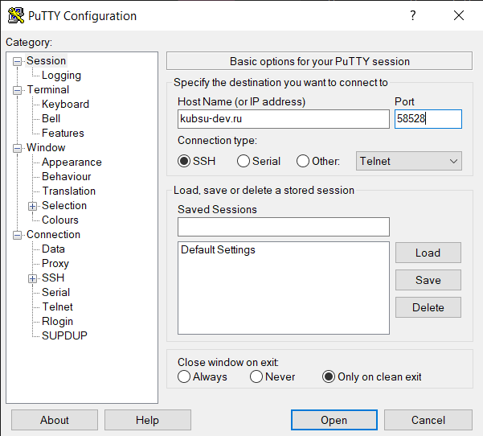
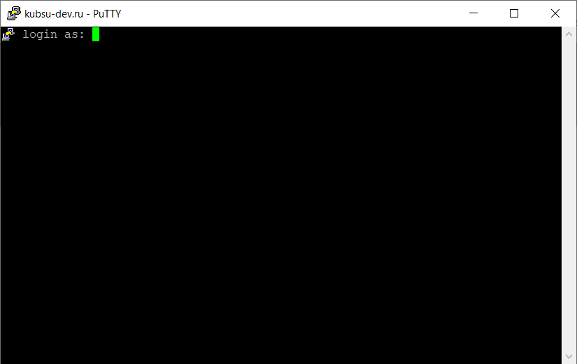
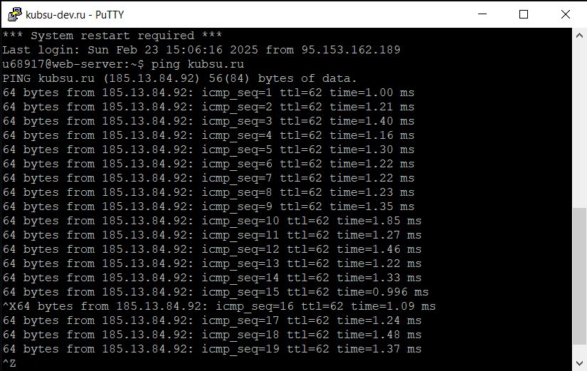
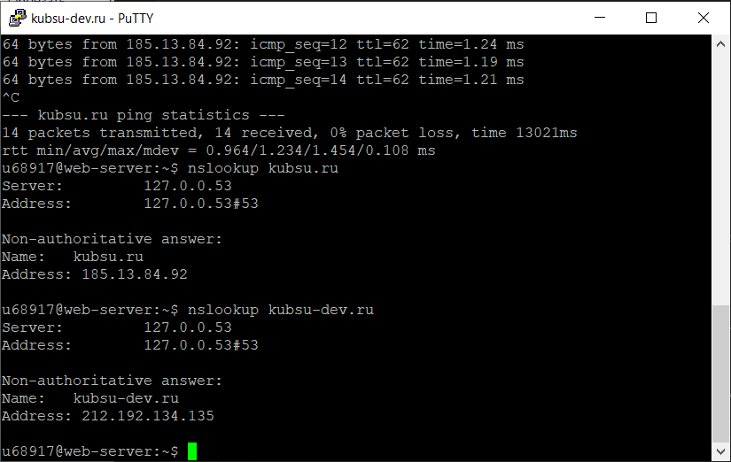
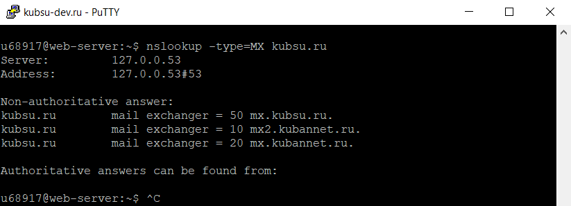
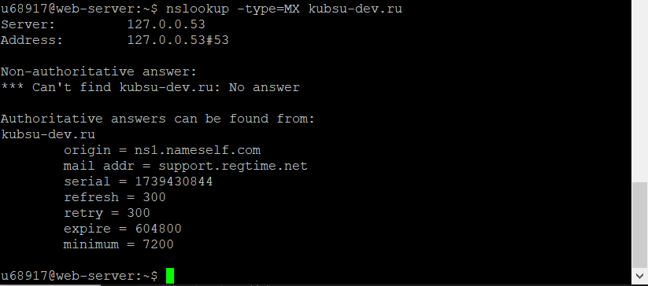
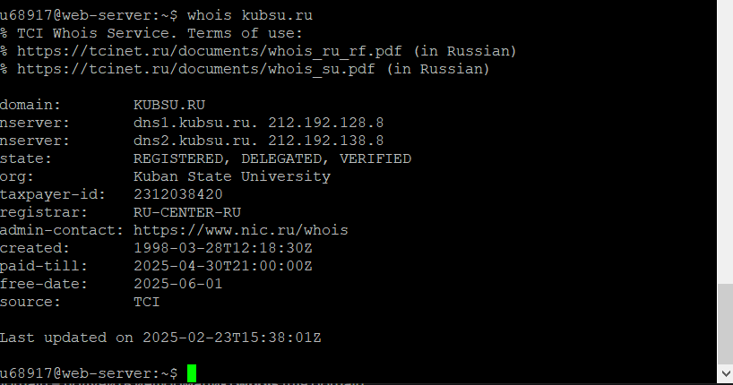
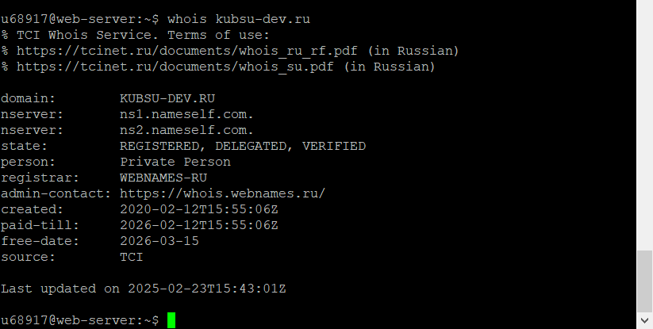
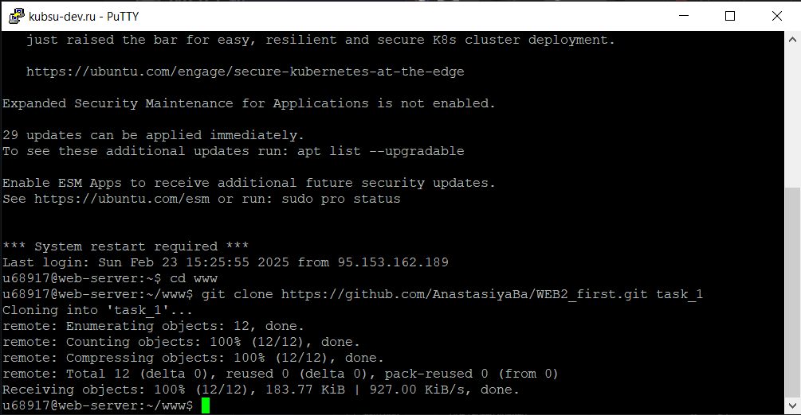
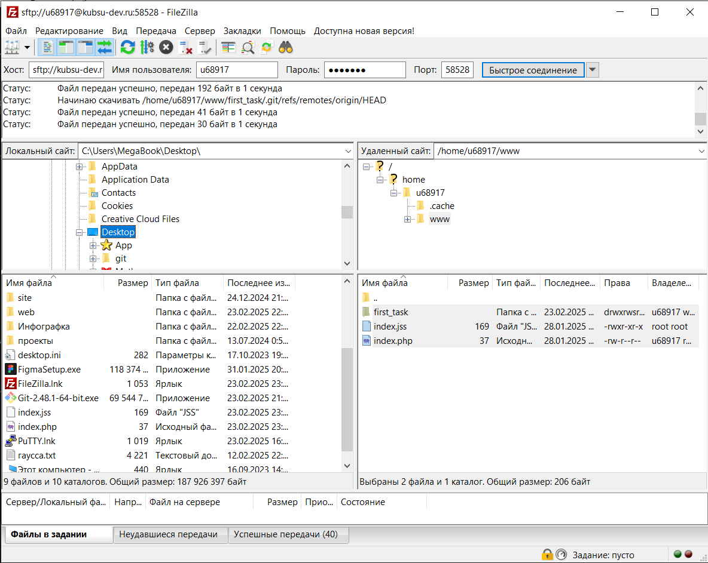

1. Получив доступ к учебному серверу kubsu-dev.ru, подключаюсь к нему через SSH с помощью клиента PuTTY.

2. С помощью команды ping узнаем IP-адрес веб-сервера kubsu.ru
3. С помощью команды nslookup узнаю A-записи и MX-записи домена kubsu.ru и kubsu-dev.ru


4. С помощью команды whois узнаю дату регистрации домена kubsu.ru и kubsu-dev.ru

5. С помощью https клонирую репозиторий со скриншотами и страницей в каталог www.
6. С помощью программы FileZilla соединяюсь с учебным сервером по протоколу SFTP и копирую на локальный компьютер файлы задания из каталога www.
